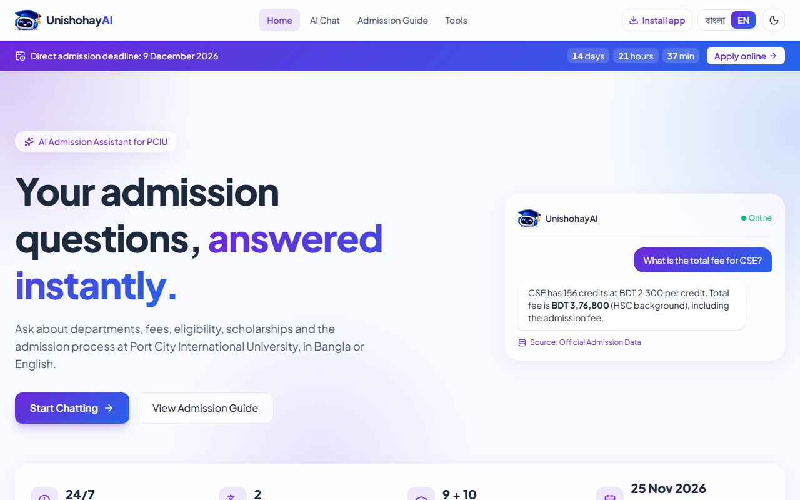
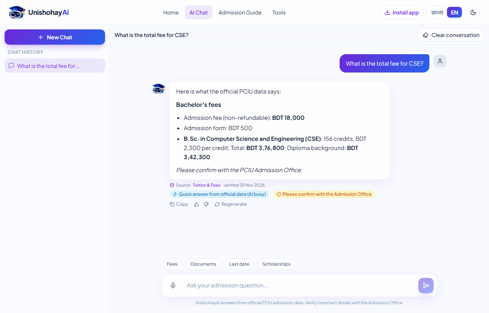
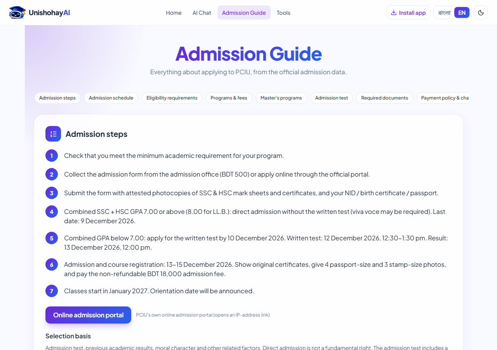
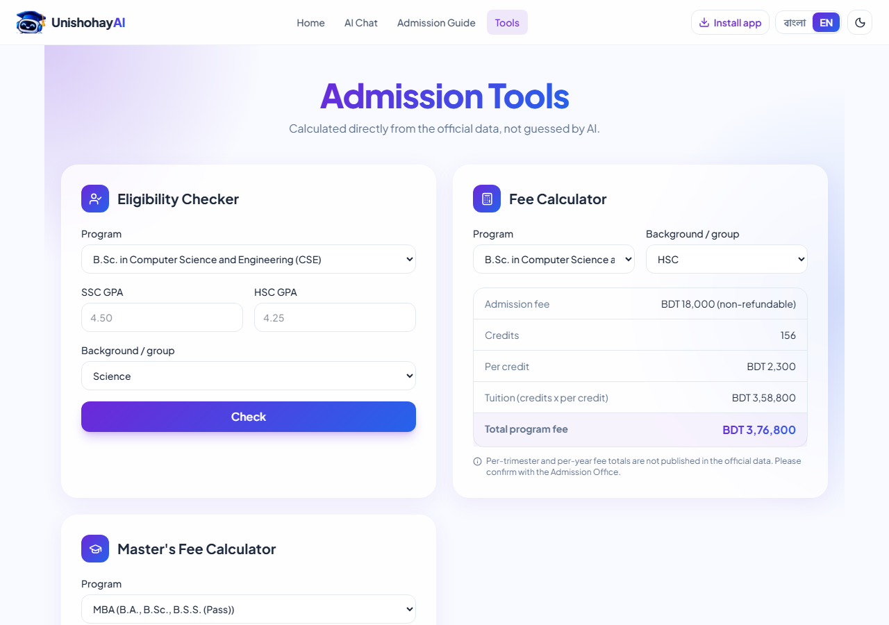
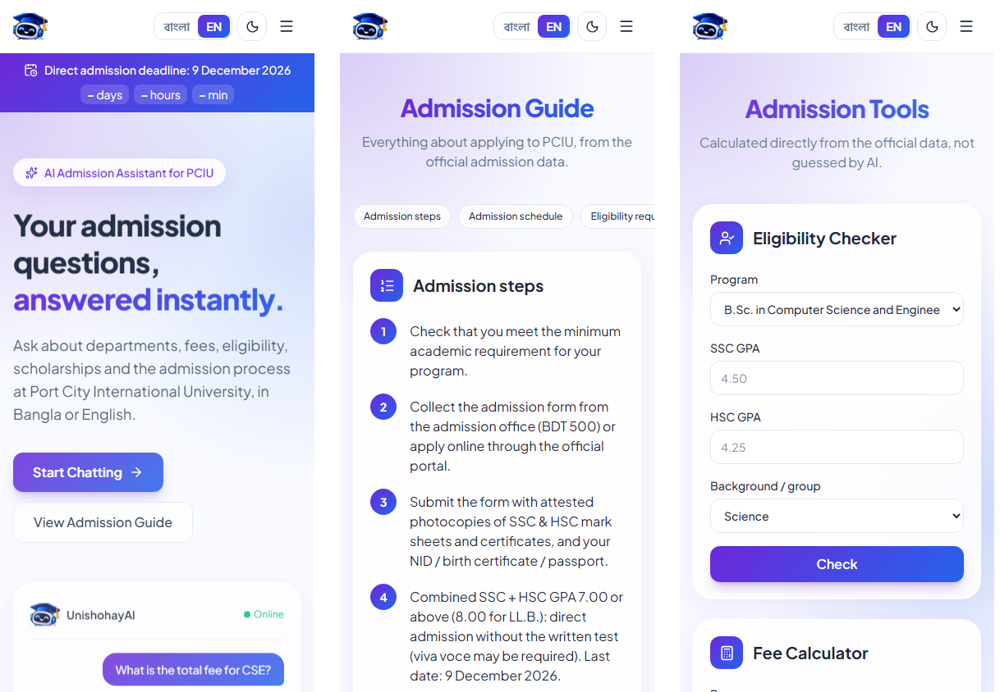

পোর্ট সিটি ইন্টারন্যাশনাল ইউনিভার্সিটির (PCIU) জন্য বাংলা ও ইংরেজি
এআই ভর্তি সহকারী — কী আছে, কীভাবে ব্যবহার করবেন, কেন কাজে আসবে
UnishohayAI (ইউনিসহায় এআই) একটি ওয়েবসাইট ও চ্যাটবট। এখানে শিক্ষার্থী ও অভিভাবকেরা পোর্ট সিটি ইন্টারন্যাশনাল ইউনিভার্সিটির ভর্তি, ফি, যোগ্যতা, বৃত্তি, শিক্ষক তালিকা ও ক্যাম্পাস সংক্রান্ত যেকোনো প্রশ্ন নিজের ভাষায় করে সাথে সাথে উত্তর পান। উত্তর আসে শুধু PCIU-র অফিসিয়াল ওয়েবসাইট থেকে সংগৃহীত তথ্য থেকে, আর প্রতিটি উত্তরের নিচে তথ্যের উৎস দেখানো হয়।
বাংলা বা ইংরেজিতে প্রশ্ন লিখুন বা বলুন; একই ভাষায় গোছানো উত্তর পান। আগের প্রশ্ন মনে রেখে পরের প্রশ্ন বোঝে।
উত্তর আসে PCIU-র ওয়েবসাইট থেকে সংগৃহীত তথ্য থেকে; তথ্য না থাকলে অনুমান না করে ভর্তি অফিসের ফোন নম্বর দেয়।
যোগ্যতা যাচাই, ফি ক্যালকুলেটর, মাস্টার্স ফি ক্যালকুলেটর ও প্রোগ্রাম তুলনা — এআই নয়, সরাসরি ডেটা থেকে হিসাব।
ফোনে ইনস্টল করা যায় (PWA); ভর্তি নির্দেশিকা আর টুলস একবার খুললে ইন্টারনেট ছাড়াও দেখা যায়।
যে ভাষায় প্রশ্ন, সেই ভাষায় উত্তর। পুরো সাইটের ভাষা এক ক্লিকে বাংলা / EN করা যায়।
প্রতিটি উত্তরের নিচে "সূত্র: টিউশন ও ফি · যাচাই ২৫ নভেম্বর ২০২৬" ধরনের লাইন, অফিসিয়াল পেজের লিংকসহ।
এআই সার্ভার ব্যস্ত থাকলেও ৮ সেকেন্ডের মধ্যে সরাসরি অফিসিয়াল ডেটা থেকে উত্তর দেয় — "সার্ভিস বন্ধ" দেখায় না।
ফি, জিপিএ, তারিখ বা বৃত্তির অঙ্ক কখনো বানায় না। দুই অফিসিয়াল পেজে তথ্যে অমিল থাকলে দুটোই দেখায়।
"CSE বিভাগের সব শিক্ষকের নাম দাও" বা "Farzina Akther কে?" — বিভাগ ও পদবিসহ উত্তর।
মাইক বাটনে চাপ দিয়ে কথা বলে প্রশ্ন করা যায় (Chrome/Edge ব্রাউজারে)।
আগের কথোপকথন সংরক্ষিত থাকে; নাম বদলানো, মুছে ফেলা, নতুন চ্যাট শুরু করা যায়।
হোম পেজে সরাসরি ভর্তির শেষ তারিখ (৯ ডিসেম্বর ২০২৬) পর্যন্ত কত দিন-ঘণ্টা বাকি, লাইভ দেখায়।
প্রতিটি উত্তরে 👍/👎 দিয়ে জানানো যায় উত্তরটি কাজে লেগেছে কি না।
| বিষয় | উদাহরণ |
|---|---|
| বিভাগ ও প্রোগ্রাম | ৯টি ব্যাচেলর ও মাস্টার্স প্রোগ্রাম, অনুষদ ও বিভাগের তালিকা |
| ফি ও খরচ | ভর্তি ফি, প্রতি ক্রেডিট টিউশন, মোট প্রোগ্রাম ফি (এইচএসসি ও ডিপ্লোমা), মাস্টার্স ফি, ট্রান্সক্রিপ্ট-সার্টিফিকেট ফি |
| যোগ্যতা ও ভর্তি পরীক্ষা | ন্যূনতম জিপিএ, সরাসরি ভর্তির নিয়ম (মিলিত জিপিএ ৭.০০), লিখিত পরীক্ষার নম্বর বণ্টন |
| তারিখ ও কাগজপত্র | জানুয়ারি ২০২৭ ইনটেকের সময়সূচি, আবেদন ও ভর্তির সময় যা যা লাগবে |
| বৃত্তি ও পেমেন্ট | বৃত্তির নিয়ম, বিকাশ/রকেট/ব্যাংকে ফি দেওয়ার পদ্ধতি |
| একাডেমিক নিয়ম | গ্রেডিং স্কেল, উপস্থিতি, প্রবেশন, রিপিট/ইমপ্রুভমেন্ট, ফলাফল দেখার উপায় |
| ক্যাম্পাস ও মানুষ | লাইব্রেরি, মেডিকেল সেন্টার, ফোরাম, ভিসি ও ডিন, বিভাগভিত্তিক শিক্ষক তালিকা, যোগাযোগ |
রাত ১২টায়ও জানতে পারবে কোন বিষয়ে কত খরচ, নিজের জিপিএ দিয়ে যোগ্য কি না, সরাসরি ভর্তি পাবে কি না, কোন কাগজ লাগবে আর শেষ তারিখ কবে।
বাংলায় প্রশ্ন করে বাংলায় উত্তর পাবেন; ফি ক্যালকুলেটর দিয়ে মোট খরচের পরিষ্কার হিসাব দেখে পরিকল্পনা করতে পারবেন।
গ্রেডিং, উপস্থিতি, ইমপ্রুভমেন্ট, ট্রাইমেস্টার ড্রপ, এডমিট কার্ড, ফলাফল দেখা আর কোন শিক্ষক কোন বিভাগে — দ্রুত জানতে পারবে।
বারবার আসা একই প্রশ্নের চাপ কমবে; অফিস সময়ের বাইরেও শিক্ষার্থীরা সঠিক তথ্য পাবে; 👍/👎 থেকে বোঝা যাবে কোন তথ্যের চাহিদা বেশি।

হোম পেজ: সরাসরি ভর্তির শেষ তারিখের লাইভ কাউন্টডাউন, "Start Chatting" বাটন ও নমুনা চ্যাট

চ্যাট পেজ: উত্তরের নিচে উৎস (Tuition & Fees, যাচাই ২৫ নভেম্বর ২০২৬), নিশ্চিত হওয়ার নোট, কপি ও 👍/👎
সব তথ্য এক পেজে, ওপরের বাটন দিয়ে সরাসরি যেকোনো অংশে যাওয়া যায়:

Admission Guide: ওপরে দ্রুত নেভিগেশন বাটন, নিচে ধাপে ধাপে ভর্তি প্রক্রিয়া

Tools: এআই নয়, সরাসরি অফিসিয়াল ডেটা থেকে হিসাব

মোবাইল ভিউ: হোম, ভর্তি নির্দেশিকা ও টুলস — ছোট স্ক্রিনেও সম্পূর্ণ ব্যবহারযোগ্য
অ্যাপ আইকনে লং-প্রেস করলে সরাসরি AI Chat, Admission Guide বা Tools-এ যাওয়া যায়। ভর্তি নির্দেশিকা ও টুলস একবার খোলার পর ইন্টারনেট ছাড়াও দেখা যায়; চ্যাটের জন্য ইন্টারনেট লাগে।
| বাংলা | English |
|---|---|
| সিএসই পড়তে মোট খরচ কত? | What is the total fee for CSE? |
| আবেদনের শেষ তারিখ কবে? | What is the last date to apply? |
| লিখিত পরীক্ষা ছাড়া কি সরাসরি ভর্তি হওয়া যায়? | Can I get direct admission without a written test? |
| ভর্তির জন্য কী কী কাগজপত্র লাগবে? | What documents do I need for admission? |
| সিএসই ডিপার্টমেন্টের সব টিচারদের নাম দাও | Who is the chairman of EEE? |
| লাইব্রেরি কখন খোলা থাকে? | What is the fee for an MBA? |
| বিকাশে কীভাবে ফি দেব? | How many credits is BBA? |
| ০:০০–০:৩০ | সমস্যা বলুন: ভর্তির তথ্য অনেক পেজে ছড়ানো, ইংরেজিতে, অফিস সময়ের বাইরে উত্তর নেই। |
| ০:৩০–১:০০ | হোম পেজ দেখান: লাইভ কাউন্টডাউন, বাংলা/EN টগল এক চাপে পুরো সাইটের ভাষা বদলায়। |
| ১:০০–১:৪৫ | বাংলায় প্রশ্ন: "সিএসই পড়তে মোট খরচ কত?" → তারপর "ওটার জন্য কত জিপিএ লাগবে?" (প্রসঙ্গ মনে রাখে)। উত্তরের নিচের উৎস লাইন দেখান। |
| ১:৪৫–২:১৫ | সততা দেখান: "PCIU তে হোস্টেল আছে?" → "প্রকাশিত নয়" + ফোন নম্বর। "How many credits is BBA?" → দুই উৎসের অমিল (১৩০ বনাম ১২৭) দুটোই দেখায়। |
| ২:১৫–২:৪৫ | টুলস ও শিক্ষক: Eligibility Checker-এ জিপিএ দিয়ে ফল; "সিএসই ডিপার্টমেন্টের সব টিচারদের নাম দাও"। |
| ২:৪৫–৩:০০ | মোবাইল ও শেষ কথা: ফোনে ইনস্টল করা অ্যাপ দেখান; সম্পূর্ণ ফ্রি টুলে তৈরি, শিক্ষার্থী ও ভর্তি অফিস দুই পক্ষের সময় বাঁচায়। |
| প্রশ্ন | উত্তর |
|---|---|
| এআই ভুল তথ্য দিলে? | এআই শুধু আমাদের দেওয়া অফিসিয়াল ডেটা থেকে উত্তর দেয়; অঙ্ক বানানো নিষেধ, উৎস দেখায়, আর ফি-যোগ্যতায় "অফিস থেকে নিশ্চিত হোন" নোট দেয়। |
| এআই সার্ভার বন্ধ থাকলে? | ৮ সেকেন্ডে উত্তর না এলে বট নিজেই ডেটা থেকে নিয়মভিত্তিক উত্তর দেয়, তাই ডেমো বা ব্যবহারে বিরতি হয় না। |
| তথ্য পুরোনো হয়ে গেলে? | সব তথ্য একটি JSON ফাইলে; প্রতি ইনটেকে শুধু ফাইলটি হালনাগাদ করলেই বট নতুন তথ্য বলে, কোড বদলাতে হয় না। |
| খরচ কত? | Next.js, Vercel ও Google Gemini-এর ফ্রি টিয়ারে চলে; কোনো পেইড ডাটাবেস বা সার্ভিস নেই। |
| ভবিষ্যতে কী করা যায়? | পিসিআইইউ-এর অফিসিয়াল ডেটার সাথে সরাসরি সংযোগ, ভর্তি অফিসের জন্য প্রশ্ন-বিশ্লেষণ ড্যাশবোর্ড, Messenger/WhatsApp বট। |
| অংশ | প্রযুক্তি |
|---|---|
| ওয়েবসাইট | Next.js (App Router), React, TypeScript, Tailwind CSS |
| এআই | Google Gemini (Flash models, free tier) via @google/genai, streaming |
| ডেটা | একটি JSON ফাইল (PCIU ওয়েবসাইট থেকে সংগৃহীত, ২৫ নভেম্বর ২০২৬); কোনো ডাটাবেস নেই |
| হোস্টিং ও কোড | Vercel (free), GitHub — github.com/boktiyer/unishohay-ai |
| মোবাইল | PWA: ইনস্টলযোগ্য, অফলাইন পেজ, সার্ভিস ওয়ার্কার |
ভর্তি অফিস নিজেই ডেটা হালনাগাদ করতে পারবে এমন ছোট অ্যাডমিন প্যানেল।
👍/👎 আর সাধারণ প্রশ্ন থেকে বোঝা, শিক্ষার্থীরা কী জানতে চায়।
Facebook Messenger ও WhatsApp-এ একই বট, এসএমএস রিমাইন্ডার।
Team Trio Code · PCIU Computer Club Hackathon
unishohay-ai.vercel.app · github.com/boktiyer/unishohay-ai